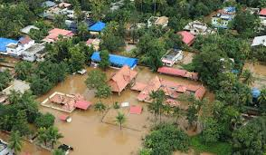

Kerala flood lasted 12 days resulting in the displacement of more than 3 lakh people, death of 370 and destruction of countless number of property, land, agriculture and various small scale businesses.
As a citizen of Kerala, I feel responsible for my brethren and I have tried my maximum in the way of donation and spreading awareness. I feel proud to have been alive in such a time as the unity my fellow Keralites are showing is incredible and heart touching.
While individuals, organisations, NGO's, schools, hospitals and political parties work together to rise above the destructions, I also see a Central Government that is aloof and worse - taking revenge on a state and its people for having an opinion.
It is true that Kerala is a secular state and we will never fully accept a Government that is partial to a particular religion. But as an Indian citizen, every Keralite has a choice to the party he or she supports to and hence this has never caused a problem beforehand.
However, the game Mr Narendra Modi plays now is purely out of narrow mindedness. Kerala is 3 crores people strong. Kerala also has a record of 100% literacy rate. I have full confidence in my state, that without a doubt it will rise above all the challenges that it has to face. I also have full confidence that I will remain an integral part of my state and would help to the best of my ability to ensure our survival.